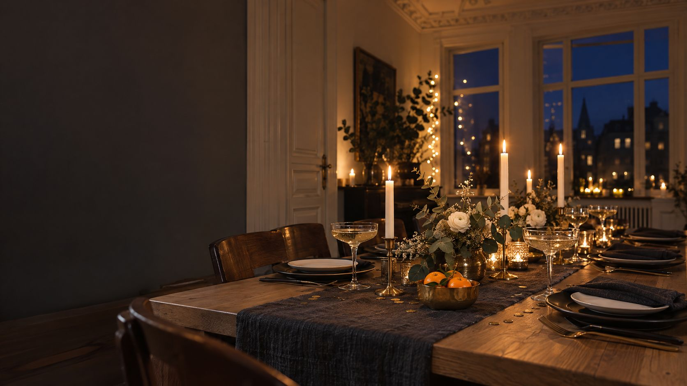

Silvester-Tischdeko
So deckst du den Tisch für den letzten Abend im Jahr: ruhig, festlich und mit Platz für Raclette. Mit Planer für Mengen und Tischlänge, drei Farbwelten und sicheren Ideen für Mitternacht.
Für Raclette rechnest du etwa 200 g Käse und 200 g Kartoffeln pro Person, dazu 100 bis 200 g Fleisch oder Fisch. Eine 0,75-Liter-Flasche Sekt füllt etwa sieben Gläser mit 0,1 Liter. Bleigießen-Sets mit Blei dürfen seit 2018 nicht mehr verkauft werden; Wachs ist die einfache Alternative, und Wunderkerzen gehören nicht in geschlossene Räume.
Die wichtigsten Zahlen.
Damit Tisch, Essen und Sekt für alle reichen.
Die Grundregeln fürs Eindecken (Gedeck, Gläser, Tischdecke) stehen ausführlich unter Weihnachtliche Tischdeko. Hier geht es um das, was an Silvester anders ist.
Der Raclette-Planer.
Gib ein, wie viele ihr seid. Du siehst, wie lang der Tisch sein sollte und was du einkaufen musst.
Wir rechnen mit 70 cm pro Platz, weil Pfännchen, Schälchen und Gläser Raum brauchen. Die Mengen sind Richtwerte aus den Quellen unten. Ohne Sekt: Ein alkoholfreier Sekt oder Saft mit Sprudel füllt die Gläser genauso.
In sechs Schritten zum Silvestertisch.
Eine dunkle Basis
Ein Läufer in Anthrazit, Nachtblau oder Leinen-Natur. Dunkle Stoffe lassen Kerzenlicht und Metall leuchten und verzeihen Käseflecken eher als Weiß.
Platz fürs Gerät
Das Raclette steht in der Mitte, so dass jeder die Pfännchen erreicht. Leg die Kabel so, dass niemand darüber stolpert, und stell nichts Brennbares direkt daneben.
Schmal decken
Pro Platz ein flacher Teller, Gabel, Holzschaber und ein Glas. Beilagen kommen in kleine Schälchen entlang der Tischmitte, nicht auf jeden Platz.
Ein Metall, wenig Glitzer
Messing oder Silber für Kerzenhalter und Untersetzer. Konfetti nur sparsam und groß, damit es nicht im Essen landet.
Licht in Höhen
Zwei, drei Stabkerzen in festen Haltern und dazu Teelichter im Glas. Mehr zu warmem Licht steht unter Licht planen.
Die Mitternachts-Ecke
Gläser, gekühlter Sekt und ein Tablett für das Wachsgießen stehen bereit, aber nicht auf dem Esstisch. So wird um Mitternacht nichts umgeräumt.
Drei Farbwelten für Silvester.
Zwei Hauptfarben und ein Metall reichen auch an Silvester.
Schwarz und Gold
Schwarze oder dunkle Teller, cremefarbene Servietten, Messing. Klassisch und mit Kerzen sehr festlich.
Nachtblau und Silber
Ein Läufer in Tiefblau, Silber und Weiß. Wirkt wie der Himmel um Mitternacht und passt zu modern.
Sicher bis Mitternacht.
- Kein Blei mehr: Bleigießen-Sets mit Blei dürfen seit 2018 nicht mehr verkauft werden. Nimm Kerzenwachs: Wachs schmelzen, in kaltes Wasser tropfen lassen, Form deuten.
- Wunderkerzen draußen: Der Landesfeuerwehrverband Bayern rät, sie nicht in geschlossenen Räumen anzuzünden. Kleine Kinder bekommen keine Wunderkerzen.
- Tischfeuerwerk auf Metall: Nur auf einer nicht brennbaren Unterlage wie einem Metalltablett, mit Abstand zu allen Gästen und weg von Kerzen und Servietten.
- Girlanden weg vom Feuer: Luftschlangen und Girlanden nicht in der Nähe von Kerzen oder Heizkörpern aufhängen. Kerzen nie unbeaufsichtigt brennen lassen.
- Fenster zu: Vor Mitternacht Fenster, Dachfenster und Balkontür schließen, damit keine Funken oder Raketen hereinkommen.
Checkliste.
Hak ab, was erledigt ist. Der Stand bleibt nur in deinem Browser.
Für den Silvestertisch.
Ideen zum Stöbern. Die Links führen zu einer Suche bei AmazonAnzeige
Häufige Fragen.
Wie viel Raclette-Käse pro Person?
Etwa 200 g. Gibt es viele Beilagen, reichen 150 g, bei wenigen Beilagen eher 250 g.
Wie viele Flaschen Sekt brauche ich für Mitternacht?
Eine 0,75-Liter-Flasche füllt etwa sieben Gläser mit 0,1 Liter. Für zwölf Gäste und je ein Glas brauchst du also zwei Flaschen.
Ist Bleigießen verboten?
Sets mit Blei dürfen seit 2018 nicht mehr verkauft werden. Wachsgießen funktioniert genauso und ist ungiftig.
Darf ich Wunderkerzen in der Wohnung anzünden?
Besser nicht. Feuerwehrverbände raten, Wunderkerzen nicht in geschlossenen Räumen abzubrennen, und kleine Kinder sollten keine bekommen.
Welche Farben passen zu Silvester?
Schwarz mit Gold, Nachtblau mit Silber oder helles Champagner mit Grün. Wähle zwei Farben und ein Metall.
Quellen.
Alle 4 Quellen anzeigen
- Stuttgarter Zeitung: Wie viel Raclette-Käse pro Person? (22.12.2025) stuttgarter-zeitung.de
- Stiftung Warentest: Bleigießen – besser bleifrei ins neue Jahr (01.12.2021) test.de
- Landesfeuerwehrverband Bayern: Ohne Ärger ins neue Jahr (Merkblatt) feuerwehren.bayern
- g-wie-gastro: Richten der Festtafel (aktualisiert 19.10.2023) g-wie-gastro.de
Geprüft am 14.11.2026.